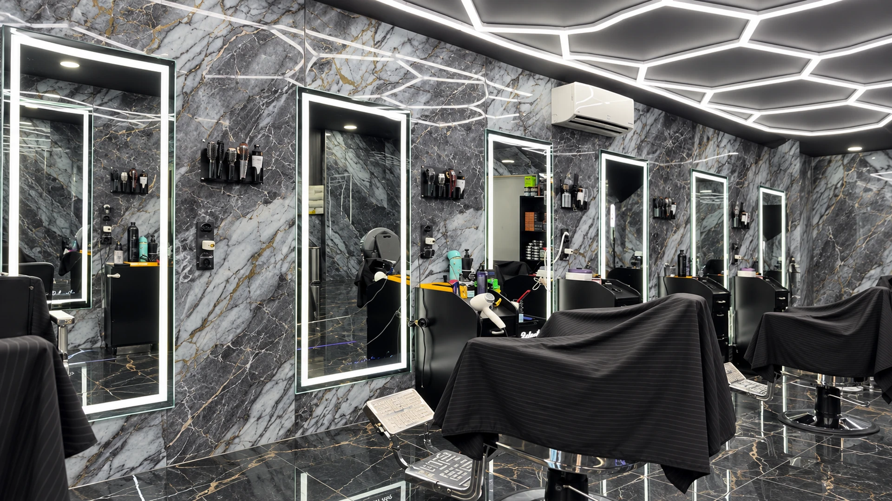
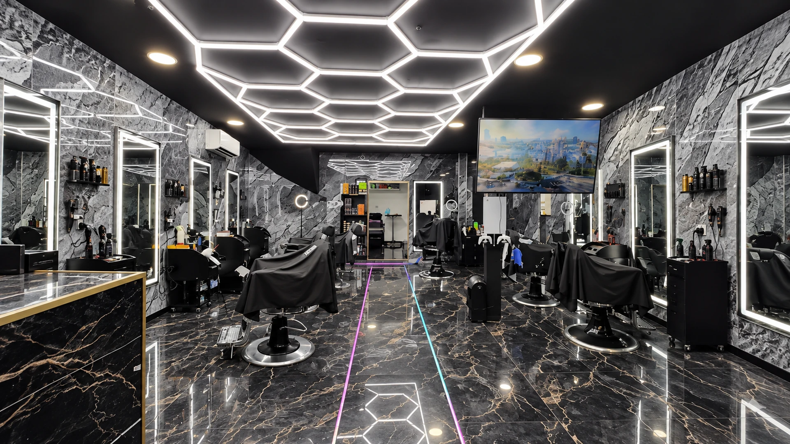

Lesalon.
139 rue Loubon, Marseille.
Photos & visite
À l’intérieur.
À la carte
La vidéo n’est pas disponible pour le moment. Les photos restent accessibles.
139 rue Loubon, Marseille.
Photos & visite

La vidéo n’est pas disponible pour le moment. Les photos restent accessibles.